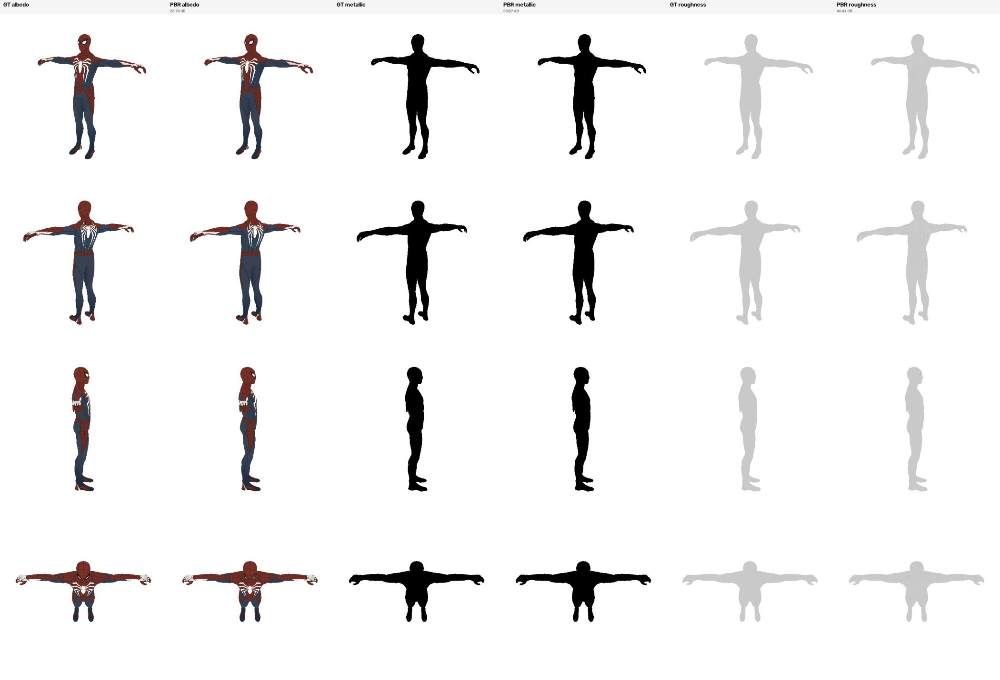

← Round P / Q 主报告纹理 VAE 汇报旧模型探索纹理 DiT 汇报
TriTex · attention-latent VAE · 2026-10-23 至 10-27
单变量微调对照（A–E）与 PBR VAE
两组实验：（1）从 1/8192 切分主线的 100k 权重出发，各改一个变量再训 30k 步，看输入采样点、格点 IO、更细切分、混合采样有没有增益；（2）在同一套配方上加入金属度和粗糙度，从头训一个 5 通道的 PBR VAE 到 100k。
1. 结论
- A–E 都没有超过对照 B。统一重评（同 32 个 mesh、三套网格）里，A、C、D、E 相对 B 在 −0.3 到 0 dB 之间，没有一组为正。91 点输入、格点 IO、1/16384 训练、混合采样都不是瓶颈。
- 切分的收益在推理时就能拿到。同一个 B，评测网格从 1/8192 换到 1/16384 就涨 0.6 dB；用 1/16384 重训（D）反而低 0.1 dB。
- PBR VAE 退火后（100k + 10k）：val32 总计 24.63，albedo 25.19，金属度 32.38，粗糙度 31.72 dB；比 100k 分别高 0.38 / 0.22 / 1.79 / 1.04 dB。
- PBR VAE 100k：val32 总计 24.25，albedo 24.97，金属度 30.59，粗糙度 30.68 dB。同一网格上 albedo 比单 albedo 模型低约 0.3 dB，多学两个通道只带来很小的损失。
2. 单变量微调对照 A–E
2.1 设置
五组都从主线（1/8192 在线多级切分、28 点输入、91 点监督与输出）的 100k 权重出发，只加载权重，优化器重置（热身 500 步，KL 不再热身），常数学习率 3e-4 再训 30k 步，2 节点 × 2 卡、每步累积 4 个 mesh。每组只改一个变量：
| 组 | 唯一改动 | 训练网格 | 步数 | s/it |
|---|
| B | 28 点输入（对照） | 1/8192 | 30k | 5.1 |
| A | 91 点输入 | 1/8192 | 30k | 5.5 |
| C | 格点 IO | 1/8192 | 30k | 3.8 |
| D | 1/16384 切分训练 | 1/16384 | 30k | 6.7 |
| E | 混合采样（平滑 28 / 高频 91） | 1/8192 | 30k | 5.5 |
s/it 为训练日志中位数（2 节点 × 2 卡、累积 4）。D 的面数多约 13%，比 B 慢约 30%，第一次提交撞上 2 天时限停在 25.5k，从 25k 检查点续跑补完。
2.2 训练时的验证曲线
训练时每组在自己的切分网格上评测，D 的网格更细，不能和其他组放在一张图里直接比。起点为 100k 权重在对应网格上的重评值。
BACEconst
Dconst / B 在同网格推理
除 E 外，各组前 2.5k 步都先掉再回升（优化器重置的代价），之后在 ±0.2 dB 内波动。共同的 +0.3 dB 左右来自多训 30k 步，与改动无关。
2.3 统一重评（2026-10-26）
训完后把六个模型（含起点 100k）放在同样 32 个验证 mesh 上，用原始 mesh、1/8192、1/16384 三套网格分别重新推理评测。面数：原始 2,055,321 → 1/8192 切分 2,161,155（×1.05）→ 1/16384 切分 2,419,578（×1.18）。
| 组 | 改动 | 原始 mesh | 1/8192 | 1/16384 | 1/8192 减 B | 1/16384 减 B |
|---|
| 起点 | 主线 100k，不再训练 | 23.70 | 24.65 | 25.27 | −0.29 | −0.26 |
| B | 28 点输入（对照） | 24.04 | 24.94 | 25.53 | — | — |
| A | 91 点输入 | 23.99 | 24.83 | 25.42 | −0.11 | −0.11 |
| C | 格点 IO | 23.84 | 24.86 | 25.23 | −0.08 | −0.31 |
| D | 1/16384 切分训练 | 23.79 | 24.71 | 25.42 | −0.23 | −0.11 |
| E | 混合采样（平滑 28 / 高频 91） | 24.09 | 24.83 | 25.46 | −0.11 | −0.07 |
| const | 每面平均色 | 24.10 | 25.18 | 25.42 | | |
面积 PSNR（dB）。绿色 / 红色表示比 B 高 / 低超过 0.1 dB。同一模型重复评测的差异约 ±0.1 dB，相邻快照之间约 ±0.2 dB。
面 PSNR 与资产中位数：
| 组 | 面 PSNR 原始 | 1/8192 | 1/16384 | 资产中位数 原始 | 1/8192 | 1/16384 |
|---|
| 起点 100k | 25.25 | 25.31 | 25.45 | 29.15 | 29.90 | 29.99 |
| B | 25.53 | 25.59 | 25.73 | 29.59 | 30.08 | 30.24 |
| A | 25.47 | 25.52 | 25.66 | 29.00 | 29.37 | 29.60 |
| C | 25.38 | 25.44 | 25.56 | 29.38 | 29.86 | 29.97 |
| D | 25.38 | 25.43 | 25.60 | 29.25 | 29.69 | 29.85 |
| E | 25.47 | 25.51 | 25.65 | 29.35 | 30.18 | 30.33 |
| const | 25.92 | 25.76 | 25.74 | 29.58 | 30.92 | 31.17 |
2.4 逐组结论
- A（91 点输入）：三套网格都低 0.1 dB 左右，资产中位数低 0.6 dB。编码器多看 3 倍的点没有帮助，输入采样密度不是瓶颈。
- C（格点 IO）：前期落后 0.6 dB，30k 时追平到 −0.1 / −0.3 dB，没有超过原始的注意力池化 + 逐点 MLP。
- D（1/16384 切分训练）：训练时看起来比其他组高约 0.4 dB，全部来自评测网格更细（const 也高 0.24 dB）。同网格比较，D 在 1/16384 上 25.42，B 直接在 1/16384 上推理 25.53。更细的切分用在推理时就够了，不需要重训。
- E（混合采样）：面积 PSNR 在原始 mesh 上和 B 持平、切分网格上 −0.1 dB；资产中位数在切分网格上略高 0.1 dB、原始 mesh 上低 0.2 dB，整体在噪声内。
3. PBR VAE（5 通道）
3.1 设置
| PBR VAE | 对比：单 albedo 主线 |
|---|
| 输出通道 | albedo RGB + 金属度 + 粗糙度（5 通道，法线 / 自发光不加） | albedo RGB |
| 数据 | 同一 Objaverse 训练集（119,318 个 mesh），缓存加了金属度、粗糙度两个通道 | 相同 |
| 切分 | 1/16384 在线多级切分 | 1/8192 |
| 输入 / 监督 | 28 点输入，91 点监督与输出 | 相同 |
| 训练 | 从头 100k 步，常数 3e-4（4k 热身），16 mesh/步，4 节点 × 4 卡 | 相同 |
| 梯度检查点 | 6 万面以下关、6 万面以上开；峰值显存 87 GB / 94 GB，约 1.8 s/it | 全开 |
| 状态 | 2026-10-26 22:08 完成 100k；12.9k 时一个 DataLoader 进程意外退出，自动从 12.5k 续跑 | — |
3.2 训练曲线
总计（5 通道）albedo金属度粗糙度5 通道 const
金属度大部分 mesh 为 0，起点高、涨得快；粗糙度在评测之间波动 1–2 dB。albedo 在 100k 时仍在上涨，没有饱和。
3.3 定量结果：100k 与 100k + 退火
| 模型 / 评测集 | 总计 | albedo | R | G | B | 金属度 | 粗糙度 | 面 PSNR | 资产中位数 | 5 通道 const |
|---|
| val32 · 100k | 24.25 | 24.97 | 23.79 | 25.93 | 25.51 | 30.59 | 30.68 | 24.23 | 28.70 | 25.08 |
| val32 · 100k + 退火 | 24.63 | 25.19 | 24.04 | 26.16 | 25.67 | 32.38 | 31.72 | 24.73 | 29.52 | 25.08 |
| held-out 63 · 100k | 24.60 | 25.27 | 23.95 | 26.12 | 26.10 | 32.08 | 30.70 | 24.92 | 29.18 | 26.76 |
| held-out 63 · 100k + 退火 | 25.12 | 25.68 | 24.43 | 26.49 | 26.46 | 33.61 | 31.64 | 25.50 | 30.09 | 26.76 |
| 训练集 64 · 100k | 27.62 | 29.40 | 28.92 | 29.76 | 29.56 | 30.19 | 31.07 | 26.49 | 29.29 | 28.19 |
| 训练集 64 · 100k + 退火 | 28.46 | 29.99 | 29.53 | 30.30 | 30.20 | 31.95 | 31.94 | 27.15 | 30.54 | 28.19 |
面积 PSNR（dB），都在 1/16384 网格上评测。const 是 5 通道每面平均色。绿色表示退火后比同一评测集的 100k 高 0.1 dB 以上。
三个评测集的含义：
- val32：验证集列表（objaverse_val.txt，共 1,207 个 mesh，训练从未见过）的前 32 个 mesh。训练过程中每 2,500 步用它评测一次，本页的训练曲线、A–E 的统一重评都用这一组，是各实验之间对比的主要依据。
- held-out 63：训练结束时，取同一个验证集列表的前 64 个 mesh 评测（结果存在 final.json）；其中 1 个（原 113,056 面）在大面切分后超过验证集 13 万面的上限被跳过，实际 63 个。它包含 val32 的那 32 个，再加 31 个，样本更多、更稳，同样是训练没见过的 mesh。
- 训练集 64：训练结束时，取训练集列表（objaverse_train.txt，共 119,318 个 mesh）的前 64 个评测。这些 mesh 训练时见过，衡量的是拟合程度而不是泛化；它和 held-out 的差距（约 3 dB）反映泛化差距。
三组 mesh 不同，const 也不同（25.08 / 26.76 / 28.19），所以不同评测集之间的绝对数值不能直接比，只能在同一评测集内比较 100k 与退火。
3.4 多学两个通道对 albedo 的影响
把 PBR 模型的 albedo 通道和只学 albedo 的模型放在同一套网格（val32、1/16384 切分）上比较：
| 模型（val32，同一 1/16384 网格，只看 albedo） | 训练 | 面积 PSNR | 减 const |
|---|
| PBR VAE 100k 的 albedo 通道 | 5 通道，1/16384，从头 100k | 24.97 | −0.45 |
| 单 albedo 主线 100k | 3 通道，1/8192，从头 100k | 25.27 | −0.15 |
| B（主线 100k + 30k 微调） | 3 通道，1/8192，130k | 25.53 | +0.11 |
| albedo const | 每面平均色 | 25.42 | |
PBR 的 albedo（1/16384 网格）单 albedo 主线（1/8192 网格）
曲线是各自训练时的验证，网格不同（1/16384 比 1/8192 容易约 0.24 dB），只能粗比；表格是同一网格的严格比较。
结论：同网格同步数下，PBR 模型的 albedo 比单 albedo 模型低 0.29 dB，代价很小。两个模型在 100k 时 albedo 都还略低于 const，和此前单 albedo 主线的情况一致：100k 还不够，需要退火或更多步数。
3.5 定性对比：10 个展示案例
GT 与 PBR VAE（5 通道，100k + 10k 退火）并排。模型在 1/16384 在线切分网格上推理（训练网格），结果映射回原始 mesh 渲染。金属度、粗糙度按灰度显示（黑 = 0，白 = 1），不做光照。
| 案例 | 面数 | albedo：100k → 退火 | 金属度：100k → 退火 | 粗糙度：100k → 退火 | GT 金属度 均值 ± 标准差 | GT 粗糙度 均值 ± 标准差 |
|---|
| Spider-Man | 99,208 | 26.06 → 26.78 | 57.4 → 58.1 | 40.2 → 46.4 | 0.00 ± 0.00 | 0.79 ± 0.00 |
| Soldier | 31,263 | 29.07 → 29.52 | 63.1 → 65.2 | 41.1 → 50.5 | 0.00 ± 0.00 | 0.60 ± 0.00 |
| 救护车 | 48,270 | 28.83 → 29.29 | 23.9 → 24.4 | 23.9 → 24.1 | 0.04 ± 0.15 | 0.69 ± 0.13 |
| Enternity Demon | 50,026 | 30.02 → 31.01 | 63.4 → 63.4 | 47.1 → 62.4 | 0.00 ± 0.00 | 1.00 ± 0.00 |
| Hello Neighbor | 23,610 | 25.91 → 26.33 | 57.4 → 58.9 | 46.1 → 55.5 | 0.00 ± 0.00 | 1.00 ± 0.00 |
| 舞蹈面具 | 8,046 | 26.27 → 26.68 | 26.8 → 38.6 | 41.4 → 45.9 | 0.40 ± 0.00 | 0.40 ± 0.00 |
| Rippersnapper | 5,746 | 22.54 → 22.98 | 53.7 → 59.6 | 38.5 → 47.5 | 0.00 ± 0.00 | 0.60 ± 0.00 |
| Shadowsun | 7,434 | 23.46 → 23.72 | 21.5 → 22.2 | 22.5 → 22.7 | 0.02 ± 0.09 | 0.68 ± 0.28 |
| Dog | 33,384 | 30.11 → 30.62 | 28.9 → 32.2 | 41.1 → 47.1 | 0.64 ± 0.21 | 0.80 ± 0.00 |
| Bee | 51,731 | 24.66 → 25.02 | 47.2 → 58.8 | 29.5 → 31.4 | 0.00 ± 0.00 | 0.49 ± 0.25 |
| 10 例平均 | | 26.69 → 27.19 | 44.3 → 48.1 | 37.1 → 43.4 | | |
4 视角渲染图前景像素 PSNR（dB），PBR 100k → 100k + 退火；绿色为提升超过 0.1 dB。金属度、粗糙度的 PSNR 在 GT 为常数的案例上会很高（模型只需输出一个常数）；10 个案例里有 6 个两项都是常数（标准差 < 0.01），这类案例主要看 albedo。
交互式 3D 对比
三列共享相机：GT / C5VAE_100k / C5VAE_100k_anneal（C5VAE = 5 通道 PBR VAE）。用“通道”切换 albedo、金属度、粗糙度；金属度和粗糙度按灰度显示，不做光照。
多视角渲染

Spider-Man · albedo 26.78 · 金属度 58.1 · 粗糙度 46.4 dBSoldier · albedo 29.52 · 金属度 65.2 · 粗糙度 50.5 dB救护车 · albedo 29.29 · 金属度 24.4 · 粗糙度 24.1 dB展开其余 7 个案例（列为 GT albedo / PBR albedo / GT 金属度 / PBR 金属度 / GT 粗糙度 / PBR 粗糙度）
Enternity Demon · albedo 31.01 · 金属度 63.4 · 粗糙度 62.4 dBHello Neighbor · albedo 26.33 · 金属度 58.9 · 粗糙度 55.5 dB舞蹈面具 · albedo 26.68 · 金属度 38.6 · 粗糙度 45.9 dBRippersnapper · albedo 22.98 · 金属度 59.6 · 粗糙度 47.5 dBShadowsun · albedo 23.72 · 金属度 22.2 · 粗糙度 22.7 dBDog · albedo 30.62 · 金属度 32.2 · 粗糙度 47.1 dBBee · albedo 25.02 · 金属度 58.8 · 粗糙度 31.4 dB
3.6 退火（100k + 10k）
作业 36639696：从 100k 权重出发，只加载权重、优化器重置（热身 500 步），学习率余弦 3e-4 → 0 共 10k 步，其余设置不变；2026-10-28 02:51 完成。
| 总计 | albedo | 金属度 | 粗糙度 | 面 PSNR | 资产中位数 |
|---|
| val32 · 100k | 24.25 | 24.97 | 30.59 | 30.68 | 24.23 | 28.70 |
| val32 · 100k + 退火 10k | 24.63 | 25.19 | 32.38 | 31.72 | 24.73 | 29.52 |
| val32 增益 | +0.38 | +0.22 | +1.79 | +1.04 | +0.50 | +0.82 |
| held-out 63 · 100k | 24.60 | 25.27 | 32.08 | 30.70 | 24.92 | 29.18 |
| held-out 63 · 100k + 退火 | 25.12 | 25.68 | 33.61 | 31.64 | 25.50 | 30.09 |
| held-out 增益 | +0.51 | +0.41 | +1.53 | +0.94 | +0.58 | +0.91 |
总计（5 通道）albedo金属度粗糙度5 通道 const
结论：退火在 val32 上带来总计 +0.38、albedo +0.22、金属度 +1.79、粗糙度 +1.04 dB，资产中位数 +0.82。金属度、粗糙度受益最大；albedo 的增益（约 +0.2 val32 / +0.4 held-out）和此前单 albedo 模型 100k → 100k + 退火的幅度相近。3.5 节的定性对比用的就是退火后的模型。